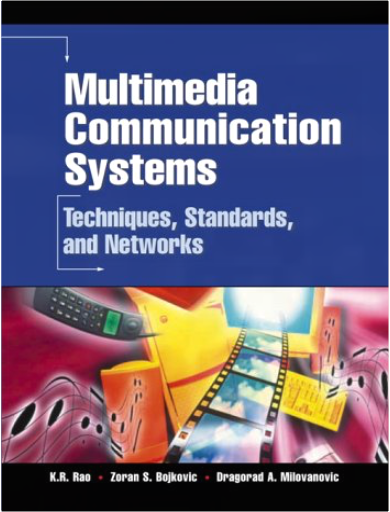
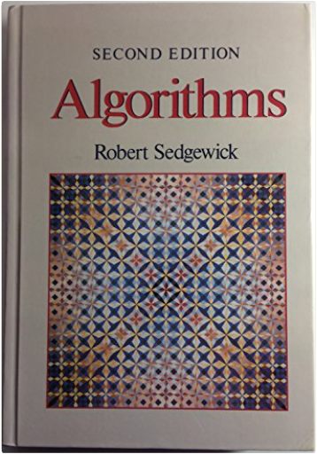
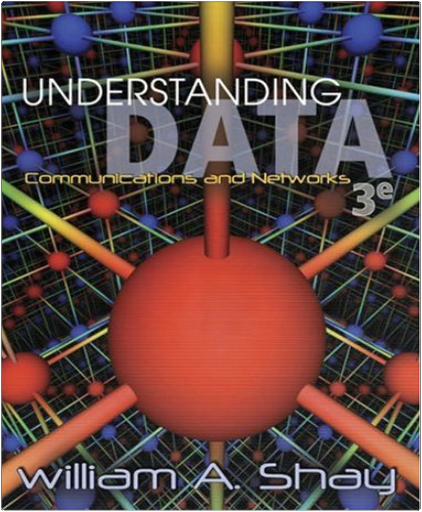

 Multimedia Communication Systems: Techniques, Standards, and NetworksK. R. Rao, Zoran S. Bojkovic, Dragorad A. Milovanovic  Multimedia Communication Systems is a comprehensive guide to the theory, principles, and practical techniques associated with implementing next-generation networked multimedia communications systems. It brings together key advances in multimedia architecture; MPEG standards; audio-visual integration; multimedia processing; storage and retrieval; service deployment; network and traffic management; QoS; and much more.  Now in the Fourth Edition, Programming the World Wide Web provides a comprehensive introduction to the tools and skills required for building and maintaining server sites on the Web, teaching readers how to develop platform-independent sites using current Web development technology. Essential programming exercises are presented using a manageable progression: Readers begin with a foundational XHTML Web site and employ new languages and technologies to add features.  AlgorithmsRobert Sedgewick Hardcover: 657 pages Publisher: Addison-Wesley Pub (Sd); 2 Sub edition (April 1988) Language: English Verified Software: Theories, Tools, Experiments: Second International Conference, VSTTE 2008, Toronto, Canada, October 6-9, 2008, ProceedingsNatarajan Shankar, Jim Woodcock This volume contains the proceedings of the second working conference on Verified Software: Theories, Tools, and Experiments, VSTTE 2008, held in Toronto, Canada, in October 2008. The 16 papers presented together with 4 invited talks were carefully revised and selected for inclusion in the book. This second conference formally inaugurates the Verified Software Initiative (VSI), a fifteen-year, co-operative, international project directed at the scientific challenges of large-scale software verification. The scope of the cooperative effort includes the sharing and interoperability of tools, the alignment of theory and practice, the identification of challenge problems, the construction of benchmark suites, and the execution of large-scale experiments.  Understanding Data Communications and Networks, Third EditionWilliam A. Shay Thoroughly updated for currency, this book offers a clear presentation of data communications and network fundamentals. Featuring a wide array of applications, the book fully explains concepts and supports them with case studies or descriptions of specific software and other products. Students learn the protocols of analog and digital signals, data compression, data integrity, data security, local area networks, asynchronous transfer mode (ATM), and much more. The third edition includes important information on the latest developments of the Internet. Version Control by ExampleEric Sink This book uses practical examples to explain version control with both centralized and decentralized systems. Topics covered include: | How to Write Articles for Newspapers and MagazinesDawn B. Sova A professional journalist shows students how to write hard-hitting news stories and attention-getting feature articles for newspapers and magazines. Computer Science: Operating Systems, Internals and Design Principals with How to Program. Custom Edition for University of Texas - Austin Course CS439Stallings 1269258796 Computer Networking with Internet Protocols and TechnologyWilliam Stallings This book provides professionals with a fresh and comprehensive survey of the entire field of computer networks and Internet technology—including an up-to-date report of leading-edge technologies. TCP/IP, network security, Internet protocols, integrated and differentiated services, TCP performance, congestion in data networks, network management, and more. For programmers, systems engineers, network designers, and others involved in the design of data communications and networking products; product marketing personnel; and data processing personnel who want up-to-date coverage of a broad survey of topics in networking, Internet technology and protocols, and standards.  "Now in Hindi PUBLISHED FOR THE FIRST TIME IN THE WORLD! A Life-Changing Guide for Personal and Professional Greatness A life-changing guide for personal and professional greatness! The Mastery Manual is packed with real-world ideas and practices that will get you to world-class standards quickly. The book comprises 36 life-changing modules, each of which will help you take your business and your life to the next level. You deserve to live your life at epic levels, creating spectacular results each day. Leave frustrations forever behind and feel yourself operating at your best. The Mastery Manual will teach you to be inspired like the ultra-achievers, realize brave dreams and reconnect with the power that is within you to make you the master of your future. This potent book is your manual - start reading it today! Robin Sharma is one of the most widely read authors in the world today. His eleven #l international bestsellers have sold millions of copies in over 60 countries and 70 languages. A highly influential blogger and social media celebrity, Robin is also a much sought-after speaker."  Success in your calculus course starts here! James Stewart's CALCULUS texts are world-wide best-sellers for a reason: they are clear, accurate, and filled with relevant, real-world examples. With CALCULUS, Sixth Edition, Stewart conveys not only the utility of calculus to help you develop technical competence, but also gives you an appreciation for the intrinsic beauty of the subject. His patient examples and built-in learning aids will help you build your mathematical confidence and achieve your goals in the course!  With its conversational tone and practical focus, this text mixes applied and theoretical aspects for a solid introduction to cryptography and security, including the latest significant advancements in the field. Assumes a minimal background. The level of math sophistication is equivalent to a course in linear algebra. Presents applications and protocols where cryptographic primitives are used in practice, such as SET and SSL. Provides a detailed explanation of AES, which has replaced Feistel-based ciphers (DES) as the standard block cipher algorithm. Includes expanded discussions of block ciphers, hash functions, and multicollisions, plus additional attacks on RSA to make readers aware of the strengths and shortcomings of this popular scheme. For engineers interested in learning more about cryptography. PHP 5 For DummiesJanet Valade Covers the latest major release of PHP, the most popular open source Web scripting language, in the friendly, easy-to-understand For Dummies stylePHP is installed on nearly nine million servers, and usage has grown at the rate of 6.5 percent per month for the past two yearsPHP is easy to learn, well suited for Web development, and can be embedded with HTML, making it a good choice for creating dynamic Web pages for e-commerce sites and other Web applications; a database-friendly language, it connects easily to Sybase, MySQL, mSQL, Oracle, and other databasesExplains how to acquire and install PHP, how PHP's features make it a useful scripting language, and how to use PHP for three of the most common applications: interactive Web sites, database storage, and common operating system tasks |

Texas ACM Library
Collection Total:
62 Items
62 Items
Last Updated:
Nov 13, 2017
Nov 13, 2017

 Made with Delicious Library
Made with Delicious Library